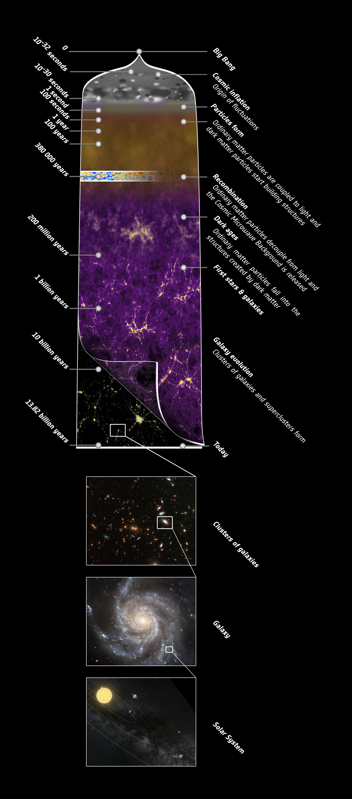

Research
Credits: ESA
In the scientific field of theoretical and observational cosmology, my research is intensely centered around the Cosmic Microwave Background (CMB), aiming to unravel the enigmas of the universe. The CMB, indicative of the universe’s earliest light, is pivotal for understanding the universe's structure, composition, and evolution.
Originating from the Big Bang around 13.8 billion years ago, the universe began as a hot, dense state. About 380,000 years post-Big Bang, photons decoupled from primordial plasma, traveling across the cosmos and manifesting as the CMB in the present, after undergoing significant redshift.
Employing advanced instruments and telescopes, scientists can capture detailed images of the CMB, allowing meticulous analysis of temperature fluctuations and polarization patterns within it. This provides insights into the universe's age, geometry, and composition, and enlightens our understanding of cosmic structures like galaxies and dark matter.
The investigation of the CMB, integrated with theoretical models and simulations, refines our perception of the early universe and its evolution, enabling the construction of accurate cosmological frameworks to explore fundamental cosmic queries, including the nature of dark energy and the origin of cosmic inflation.
 Credits: ESA
Credits: ESA
In essence, my work is deeply entrenched in theoretical and observational cosmology, focusing extensively on exploring the Cosmic Microwave Background (CMB). This research leverages the relic radiation from the Big Bang to delve into the primitive conditions of the universe and unravel complex cosmic mysteries. More specifically, my approach involves the application of optimal estimators utilizing maximum a posteriori methods to precisely estimate parameters such as the velocity of our observation frame and cluster masses derived from CMB lensing maps on arcminute scales. This detailed analysis not only provides a nuanced understanding of cosmic structures and the fundamental attributes of the universe but also aids in refining theoretical models and developing comprehensive cosmological frameworks.
Outreach
In addition to my research pursuits, I hold a deep passion for science outreach. Fostering an appreciation and understanding of science among school children in India is critically important. Engaging with these incredible young minds and kindling their interest in the scientific world bring me immense joy and satisfaction.
I had the honor of being invited as a judge for the National Children's Science Congress in Bengaluru, where I had the opportunity to assess the innovative science projects of our brilliant young minds and discuss my research with them.
I have also delivered an engaging talk titled 'The Universe in Your Pocket' at the Raman Research Institute’s outreach program for school children, using accessible language and illustrative visuals to inspire a passion for astronomy; the slides from this presentation are available upon request.
Cosmo-Blogs
In this blog channel, I share facts and findings in cosmology in a non-technical way. Give it a try, you might like it :)